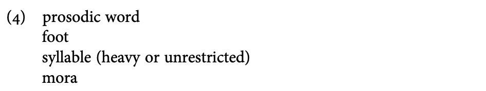
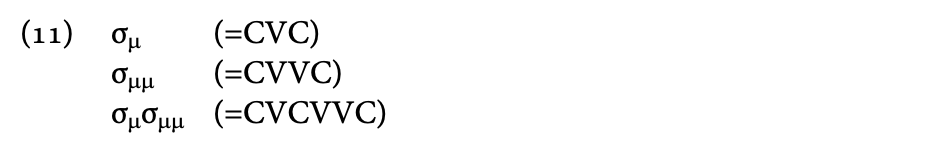
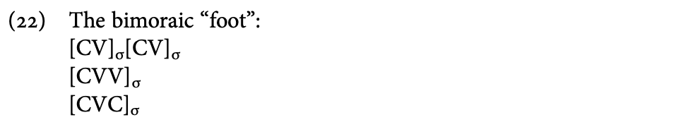
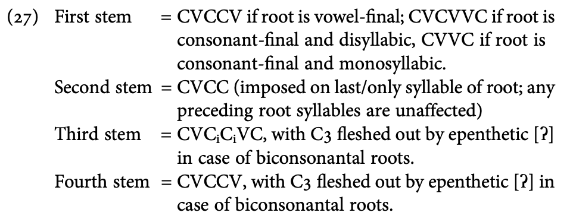
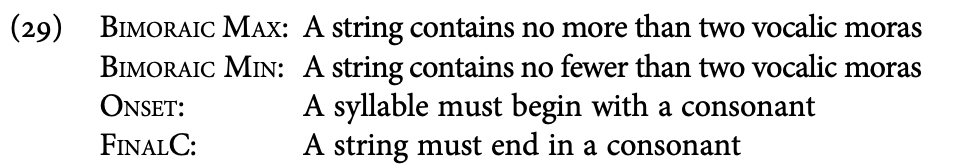
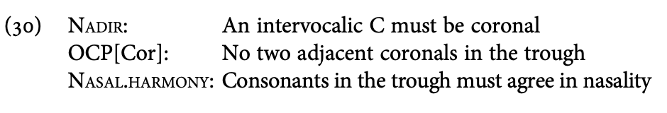

読書会2023
4.2.3 Noise words in Guarani
-
CVrVrV の構造を持つ
- 3つの V はすべて同じ
- 語中の子音はどちらも r
- 語頭の子音は阻害音か /w/
-
統語的には動詞に属している
→ 他の動詞と同じように屈折・派生する
-
CV音節を持ち鼻音調和も起こすという点では Guarani
語の音素配列に従っているが、より限定的である
-
このような厳格なテンプレは、表意音（擬音？）や音象徴に見られる
→ ある言語の音韻論的一般化に背くことがある
-
Guarani の3音節 noise word のテンプレは、Cupeño の habilitative
テンプレ同様、(4) のどれにも当てはまらない特殊な分節構造を持つ

4.2.4 Hausa V-X -> N compounds
-
Hausa 語の V-N
結合における音韻形状上の制約は、テンプレの限界を押し上げるものである
-
このテンプレは
- 単音節動詞はバイモーラ的である
- トーンはLである
- 名詞の最終母音は短母音である
にしたがう
-
条件に合わない動詞/名詞は、母音延長・トーン置換・母音短縮により、適応する形にされる
-
様々な処理が行われた結果としてすべて同じ出力に落ち着いている
→ 不変なのは「過程」ではなく「形」
→ テンプレ的
-
このテンプレは構造特有のものであり、Hausa
語自体の一般的な条件によるものではない
→ e.g. Adj-N, N-N においては母音長・トーン・音節数が保持される
4.3 Systematic stem templaticity
-
以下、より体系的で特定の構造等に依らないテンプレを扱う
-
取り上げる2つの例はどちらも、動詞パラダイムにおける語幹の形状に関するテンプレの例
4.3.1 Root shape templaticity in Yowlumne (Yawelmani)
-
動詞語幹の形状は以下の3つ (上から monomoraic, bimoraic, iambic)

-
語根は、１つの特徴的な母音と２つまたは３つの子音から成る
→ e.g. √yawl は
語彙的にはσμμに結びついており、それが別のテンプレ（σμσμμ）にマップされることによって
yawaal という文字列が生まれる
-
語根のテンプレは、ある語根がその形状に影響を与えないタイプの接尾辞と結びついたときに、その形状を定める
- Yowlumne の例では、テンプレがわかりづらい
-
Yowlumne の接尾辞の多くは (11) のテンプレのどれかを選択・要求している
(接尾辞自体がその形状を持つわけではない)
-
テンプレを選択・要求している接尾辞と結びつくとき:
→ 語根の形状 = 接尾辞の選択・要求するテンプレ
-
テンプレを選択・要求している接尾辞と結びつくとき:
→ 語根の形状 = 語根のテンプレ
-
もとのテンプレが異なる語根どうしでも、同じ要求（テンプレ）の接尾辞と結びつくとすべて同形になる
→ テンプレの強さ: 接辞 > 語根
-
Yowlumne の興味深い点
- 音韻理論の不透明性
- テンプレートと特定の形態素との語彙的関連性
- 語根と接尾辞のテンプレの対立関係
4.3.2 Tiene
- 派生動詞の語幹がとりうる形状に厳格な制限がある
-
Yowlumne のテンプレと異なる点:
- 語根だけでなく複雑な語幹にも適用される
-
韻律的サイズのみならず、テンプレ内の子音の素性の共起も制限する
-
Tiene 語の動詞派生
→ 語根は派生接尾辞と結びついて D(erivational) Stem という下位構造をなす
→ 屈折接尾辞と結びついて I(nflectional) Stem を形成する
→ さらにこれらの Stem は屈折接頭辞を持つ
-
多くの Bantu 諸語では、動詞にサイズ制限が設けられている
-
Tiene はその中でもかなり厳格な制限を、Dstemに対して課す
- 韻律的形状: バイモーラ的 (CVVC- か CVCVC- のどちらか)
-
調音位置: CVCVC- 語幹では C2 が coronal、C
3
は grave (labial/velar) である必要がある
-
鼻音性: CVCVC- 語幹では、C2 と C3
の鼻音性が一致する必要がある
-
テンプレに収まるよう、様々な方策が取られる
→ どんな形状の CVC 語根でも、テンプレにおさまる対応語を作れる
(stative の例)
4.4 Pervasive templaticity
-
ある言語において語根や単語の形状を定めるテンプレにまで拡大しているケース
4.4.1 Minimality in Lardil
-
内容語に最小サイズ条件を課す言語のひとつ
-
名詞と動詞: 最小2モーラ (= 2つの短母音 or 1つの長母音)
→
1母音語には母音挿入が行われ、2母音語からの語末音消失はキャンセルされる
4.4.2 Minimality in Japanese
-
2モーラの最小条件
- 短母音 = 1μ, 長母音 = 2μ, 尾子音 = 1μ

-
最小2モーラ条件は、さまざまな形態的派生語幹に適用される
→ e.g. 省略、複合語、借用語のクリッピング
-
「名前+ちゃん」の例では、最小2モーラ条件に適合するため、1モーラの名前は延長され、3モーラ以上の名前は短縮される
-
単形態素語は、1モーラであろうとも、最小2モーラ条件の適用外
-
ただし、「ちゃん」がつく場合や反復・複合語の場合には、延長されることもある
-
日本語の構造において新しい語幹が作られる場合には、最小2モーラ条件に従う必要がある
→ 日本語におけるテンプレ的な制約
4.5 The phonological analysis of templates
-
テンプレの３つのモデル化
-
DIRECT REPRESENTATIONAL
-
テンプレ =
与えられた形態素、語幹、単語の母音や子音などを入れる骨格
-
DIRECT CONSTRAINT
- 韻律テンプレのそれぞれをひとつの形状制約として扱う
-
すべての形態素の形状を形態素特有の形状制約に帰属させるようなフレームワークと同様
→ これら2つのアプローチ間にはほとんど違いがない
-
EMERGENTIST
-
表象上も形態素固有の制約上も、テンプレ的な形状を規定しない
→ 一般的な有標性制約の相互作用からテンプレを導出する
-
テンプレが決まった形状を持つのではなく、単に可能な語幹の幅を狭めるような場合の利点が大きい
- テンプレを形態論的動機づけ音韻論のインスタンスとして扱う
4.5.1 Root templaticity in Sierra Miwok
-
各動詞の語根は、4つの形 (第1語幹、第2語幹......) のような形で表出する
-
語根の形は、直後に続く接尾辞によって決まる
-
ただし、接尾辞そのものの音韻構造との関連はない
→ 表面的には Yowlumne に類似

-
このような規定を必要としない主張もある
-
この言語のテンプレート特性は、この言語の音韻の一般的な特性および互換を形成する接尾辞との相互作用によって現れる
-
第1語幹:
２つの異形態から選択された接尾辞が語根と結びついて形成される
- 母音で終わる語根 → 語根の第一音節に接中辞が挿入される
- 子音で終わる語根 → 母音モーラが接尾辞となる
-
第2語幹:
メタセシスもしくはデフォルトの子音モーラを接尾辞として結びつけることで形成される
メタセシス(metathesis):
広義には結合の切断と形成が同時に起こり、結合位置の交換が起こる反応
-
第3語幹: 子音接尾辞と子音モーラ接中辞を加えて形成される
→ 常に2音節となる
→ テンプレは語彙からボトムアップ的に定まる
-
第4語幹: 第3語幹に空の V
を接尾辞として加えることによりメタセシスが誘発されて形成される
→
接辞と形態論的動機づけ音韻論を組み合わせることで、テンプレ的な形状を導出することが可能
4.5.2 Illustration of emergent templates: Tiene
-
Dstemテンプレのそれぞれの構成要素を違反可能な制約として分析する
-
Dstemのテンプレ (再掲):
- 韻律的形状: バイモーラ的 (CVVC- か CVCVC- のどちらか)
-
調音位置: CVCVC- 語幹では C2 が coronal、C
3
は grave (labial/velar) である必要がある
-
鼻音性: CVCVC- 語幹では、C2 と C3
の鼻音性が一致する必要がある
-
違反可能な制約のリスト

→ 語幹が2つの母音を持つ必要はあるが、音節の数は未定義
(1音節と2音節の両方が可能)
→ ONSET と FINAL-C で CVCVC / CVVC の形を保証
-
制約で分析することの2つの利点
-
類似している2つのテンプレをまとめることのできる一般化を導出できる
-
CVVC, CVCVC は、一般的でわざわざ規定する必要もない構成要素を含む
(ONSETなど)
-
Dstem のセグメント特性の制約による指定

4.5.3 Generalized Template Theory and templatic size
-
Morpheme-Based Generalized Template Theory (MBT)
→
形態的構成要素の分岐は、韻律的構成要素の分岐と一致するはずであるという理論
→
複雑なステムも、韻律的な最小単位はバイナリなものであるという制約を支持
e.g. 2音節動詞のテンプレ
-
90s の韻律形態論では韻律階層の単位がテンプレを形成していた
→ GTT では各テンプレが Affix と Stem に分かれる
- Affix の無標形は単音節で、Stem は普遍的に韻律語である
-
各韻律語は Foot
を含み、またこれはモーラおよび音節のレベルでバイナリである
-
上の多くの例に出てきた韻律的なバイナリ性は、テンプレを Stem
として分析することで扱える
- Diminutives と Distributives
- Diminutives = Affix (CV)
- Distributives = Root (minimally bimoraic = CVC)
-
GTTは韻律テンプレに対して制限をかける
- 語幹に分類される構成要素: bimoraic or disyllabic
- 接辞に分類される構成要素: monomoraic
- GTT は三項テンプレや語根のCVへの省略には不適当
4.6 Conclusion
-
本章の流れ
- 韻律テンプレ = 形態的構造についての音韻的な形状制約